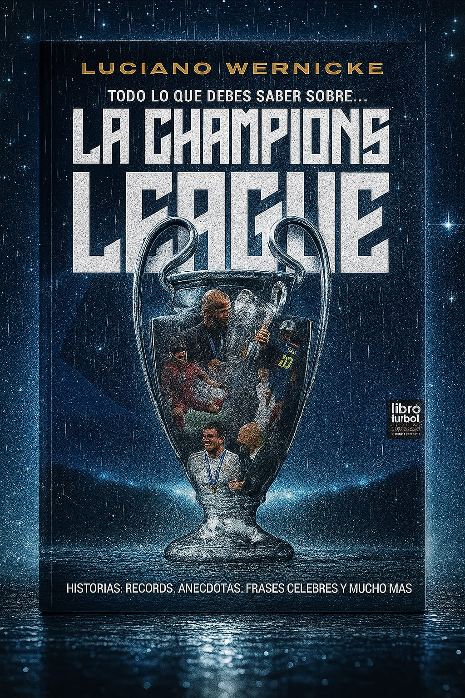

Inicio
En esta página web dedicada al apasionante mundo del fútbol, combinando información actualizada, curiosidades y un espacio de entretenimiento interactivo. La plataforma no solo ofrece contenidos sobre equipos, jugadores y torneos, sino que también incluye un juego interactivo especialmente diseñado para que los usuarios puedan poner a prueba sus conocimientos futbolísticos de manera divertida y educativa.
A través de esta plataforma, los usuarios podrán encontrar datos relevantes sobre los clubes más importantes de Colombia, como Atlético Nacional, Millonarios, América de Cali, entre otros, así como información sobre figuras históricas como Carlos "El Pibe" Valderrama, Radamel Falcao García y James Rodríguez. Además, la página ofrece contenido general sobre el fútbol internacional, incluyendo datos de las principales ligas, torneos como la Copa Mundial de la FIFA, la UEFA Champions League y la Copa Libertadores, y estadísticas históricas de equipos y jugadores legendarios.
Síguenos en nuestras redes